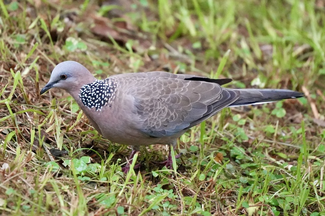
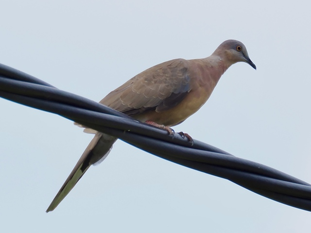
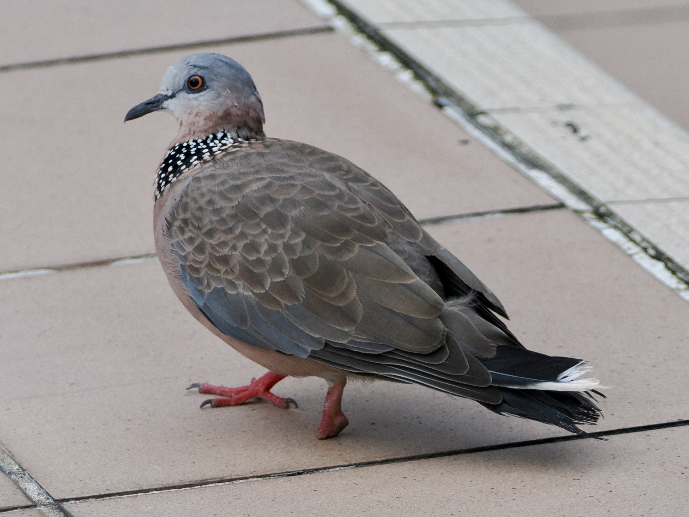

Spotted Dove
Spilopelia chinensis
Order: Columbiformes
Family: Columbidae

Most ubiquitous dove in HK. Brown plumage with grey head and spotted "necklace". Known to build shabby nests on air-conditioners.

Juvenile lacks the "necklace".

This one lives with a stump for a foot. It seems stringfoot is quite common among urban pigeons and doves.